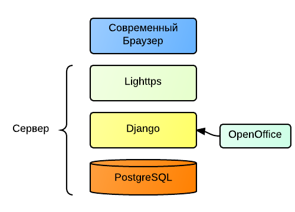
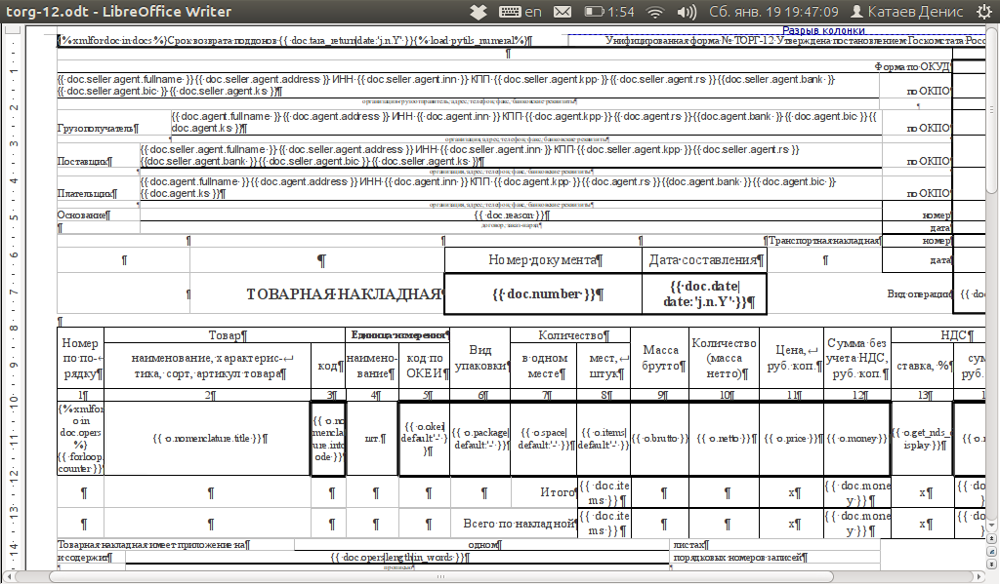

Выпускная квалификационная работа
Тема: Информационная система автоматизации технологического контроля производства и реализации продукции на ООО "Березниковский кирпичный завод"
Выполнил: Катаев Д.А.
Группа: ИВТ-08в
Руководитель: Затонский А.В.
Предметная областЬ
Лаборатория
+
Склад
Лаборатория
Испытание полуфабрикатов
Контроль сырья и технологического процесса
Испытание готовой продукции
Определение качества готовой продукции в соответствии с ГОСТ 530-2007
Склад
-
Приём продукции с производства
- Сортировка продукции
- Отгрузка
Источник информации о количестве оставшейся готовой продукции для руководителя
Проблемы
-
Информация о технологическом процессе хранится в слабо структурированном
виде, затрудняя её анализ
-
Старый способ ведения оборотной ведомости в
Excel
затруднён из-за увеличения разнообразия
продукции
-
Из-за усложнения
структуры компании увеличилось время подготовки накладных при отгрузке
Цели работы
-
Ускорить процесс отгрузки кирпича
-
Снизить количество ошибок при операциях
на складе
-
Предоставить удалённый доступ к информации
-
Обеспечить возможность накопления и анализа данных о течении технологического процесса
Задачи ИС
- Автоматизация ведения оборотной ведомости
- Формирование док-тов для печати
-
Расчёт результатов испытаний Г.П.
- Обеспечение информационной поддержки руководства
Функциональное Моделирование
idef0
АРХИТЕКТУРА
Веб-приложение
Используется стек свободных технологий

Django
фреймворк для веб-приложений на языке Python
Twitter Bootstrap
набор инструментов для создания сайтов и веб-приложений
Jquery
библиотека JavaScript
Шаблоны - OpenOfficE

Заключение
Информационная система "БКЗ" внедрена на
ООО "Березниковский кирпичный завод"
В базе которой содержится:
-
138 партий
-
273 ед. продукции
-
33 накладных
-
1214 контрагентов